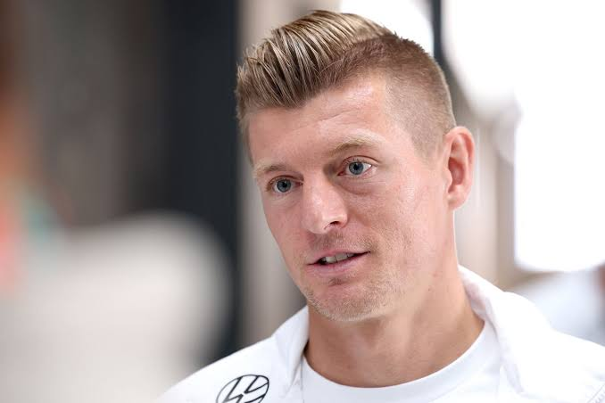
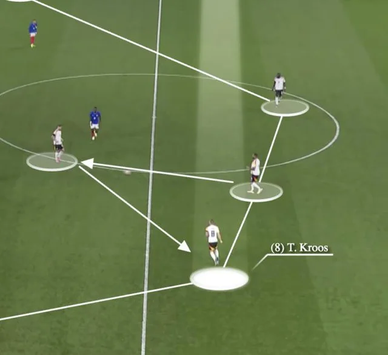
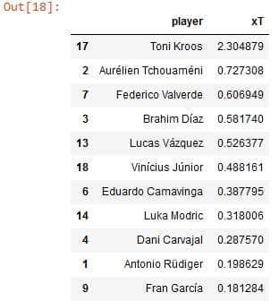

Hello Everyone!
I’m Walid BOUMAHDI
Football Data Scientist and Analyst.


Toni Kroos, the brain and dynamo of Real Madrid.
Víctor Orta, the director of Football Sevilla FC said that I do not sign a player just because of the data, but I do not sign a player anymore without checking his data. Video analysis and data analysis are complementary in terms of recruiting and evaluating players and teams. Instead of watching all videos of players or matches, we can filter this process by using data, which saves time. In this article, we will evaluate a great player – Toni Kroos. Toni Kroos is a midfielder who has been playing in the royal team since 2014. He has 23 trophies as a Real Madrid player: five Champions Leagues, five Club World Cups, four Uefa Super Cups, and four La Liga titles, one Copa Del Rey and four Uefa Super Cups and four Spanish Super Cups. Toni Kroos is the German player who has made the most appearances in Real Madrid's history with more than 450 matches.

Toni Kroos role
Toni Kroos is very important player in Real Madrid; the latter depends of him in offensively and defensively. He is a multiple-role player. He could play as a sentinel player, central midfielder and deep-lying playmaker "The regista". In the build-up phase, he is lying near the defenders to start the attack using the "la Salida Lavolpiana" technique. In addition, he could positioning as third defender in order to begin the attack.

Furthermore, He takes cover for the defenders Eder Militao and Antonio Rudiger in defensing phase. In addition, he is a creative player who operates in front of the defense, usually in a central position, and looks to get on the ball as often as possible to the attackers. He is responsible for providing the link between defense and attack and controlling the tempo of the game through his passing. The following picture shows the position of ball receiving from Toni Kroos. The latter operates in the first and the second part of the pitch, what does it means, he is the responsible of buildup and progression the ball phase.

Progressive passes clusters
As well, Toni Kroos is not only a defensive midfielder, he is also an offensive player who made progressive passes to the final third (the most player in La Liga 2023/2024) as shown in the picture by yellow and blue arrows.

Toni kroos versus LaLiga players
Toni Kroos made 18 tackles in the midfield and attacked third with 47.5 % of successful tackles. He blocks 12 passes and 72.3 % of completed long passes. He carried the ball 12 times this season and offered 131 progressive passes. His pressure is 1.96 to the average of Laliga players, 0.88 to the average of La Liga players in defense actions and 1.06 to the average in progression. However, his attack intelligence is near to the average with a standard deviation equal to 0.14.

The next table shows that Toni Kroos is so far from his teammates in expected threat value, which means that he is the most dangerous in terms of the quality of passes offered to allies (xT equal to 2.30).

The most players who receive progressive passes are as follows:

Toni Kroos completes passes better than 95% players of LaLiga, with shorts passes more than 94% players and more than 80% of players in long passes. He made tackles won better than 89% of players and more than 85% of players in interceptions. The following picture illustrates percentile rank of Toni Kroos in season 2023/2024.

Toni Kroos the king of long passes
We notice that the midfielder player Kroos, does not receive a lot passes in the attack third, the most receptions is done in the first and second mid, however, he offers a long passes from the buildup and progression phases to the final attack. In short, he has nothing to do in the final part of the pitch. Nevertheless, he stills the best player in Laliga who made passes to the final third and creating chances thanks to long passes and progressive passes.We notice that the midfielder player Kroos, does not receive a lot passes in the attack third, the most receptions is done in the first and second mid, however, he offers a long passes from the buildup and progression phases to the final attack. In short, he has nothing to do in the final part of the pitch. Nevertheless, he stills the best player in Laliga who made passes to the final third and creating chances thanks to long passes and progressive passes.
Follow us on instagram